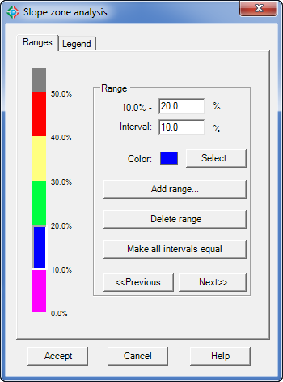
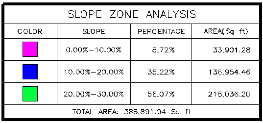
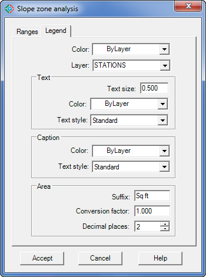

|
|
Toolbar:
Menu: CAD-Earth > Mesh commands > Slope analysis.
|
|
|
Command line: CE_SLOPEANALYSIS
Prompts:
Select triangulation mesh: Position:
CAD-Earth version: Plus, Premium. |
.png)
.png)
Command description:
This command is used to color code mesh triangles according to the slope range they are in. The start and end slope values of the range are specified and a color is chosen for each slope range. The slope representation is done by applying a solid HATCH to each slope zone that is found. A slope zone analysis legend block will be created when this command ends, allowing the user to select the insertion point and scale.
Dialog box settings (Ranges tab):

Slope zone analysis dialog box (Ranges tab)

Slope zone analysis legend
ØRange.
•Interval. Enter the percentage value for the range. If a final percentage value for the slope range is entered the interval value will be automatically calculated. The final percentage value must be greater than the final percentage value of the previous range.
•Color. The selected color will be used to create solid hatch areas for each slope range.
•Add range. Choose to display a dialog box where a percentage interval value can be specified and a color can be selected for the new slope range.
•Delete range. Choose to delete the current slope range.
•Make all intervals equal. Select this option to make all slope range intervals equal by dividing the maximum slope percentage by the number of slope ranges.
•Previous-Next buttons. Press to display data for the previous or next slope range.
Dialog box settings (Legend tab):

Slope zone analysis dialog box (Legend tab)
ØColor. The selected color will be used for the legend text and lines.
ØLayer. The text and lines will be created in the layer selected.
ØText.
•Text size. The height for legend text annotations.
•Color. The selected color will be used for legend text annotations.
•Text style. Legend text annotations will be created with the text style selected.
ØCaption.
•Color. The selected color will be used for the legend title text.
•Text style. The legend title will be created with this text style.
ØArea.
•Suffix. Text entered will be added before the total area annotation.
•Conversion factor. The total area will be multiplied by this factor.
•Decimal places. The number of digits displayed to the right of the total area annotation.
Copyright © 2023 Arqcom Software
Google Earth© is a registered trademark of Google inc. All other trademarks are the property of their respective owners.